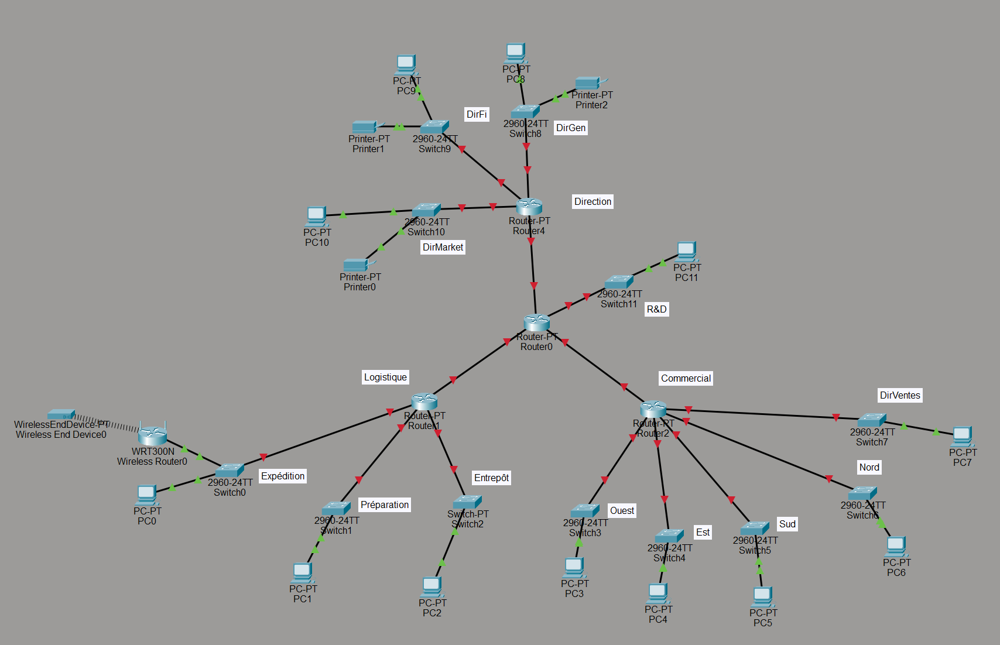

Projet réseau consistant à concevoir un plan d’adressage IP complet
pour une petite entreprise à partir d’un cahier des charges.
J’ai attribué des sous‑réseaux adaptés aux départements et services.
Ce travail m’a également permis de créer mon premier schéma logique
sur Cisco Packet Tracer, ce qui m'a permis d'acquérir une expérience
concrète de modélisation réseau.
